Let's have a look at one of the most famous bugs of the whole
Software History, the bug that AT&T suffered in 1990.
An example of the onsequences of Poor Quality Software
What happened?
At 2:25pm on Monday, January 15th, network managers at AT&T's Network
Operations Center began noticing an alarming number of red warning
signals coming from various parts of their network. Within seconds,
the network warnings were rapidly spreading from one computer-operated
switching center to another. The managers tried to bring the network
back up to speed for nine hours, while engineers raced to stabilize
the network, almost 50% of the calls placed through AT&T failed to go
through until at 11:30pm, when network laods were low enough to allow
the system to stabilize.
AT&T alone lost more than $60 million in unconnected calls.
Of course, there were many additional consequences difficult to be
measured such as business taht could be done because relied on
network connectivity.
The system was failure tolerant, wasn't it?
AT&T's long-distance network was a model of reliability and strength.
On any given day, AT&T's long-distance service, which at 1990 carried
over 70% of the US long-distance traffic.
The backbone of this massive network was a system of 114
computer-operated electronic switches (4ESS) distributed across the
United States. These switches, each capable of handling up to
700,000 calls an hour, were linked via a cascading network known
as Common Channel Signaling System No. 7 (SS7). When a telephone call
was received by the network from a local exchange, the switch would
asses 14 different possible routes to complete the call. At the same
time, it passed the telephone number to a parallel signalling network
that checked the alternate routes to determine if the switch at the other
end could deliver the call to it's local company. If the destination
switch was busy, the original switch sent the caller a busy signal and
released the line. If the switch was available, a signal-network
computer made a reservation at the destination switch and ordered
the destination switch to pass the call, after the switches checked
to see if the connection was good. The entire process took only four
to six seconds.
What went wrong?
The day the bug popped-up, a team of 100 frantically searching
telephone technicians identified the problem, which began in
New York City. The New York switch had performed a routine
self-test that indicated it was nearing its load limits. As standard
procedure, the switch performed a four-second maintenance reset and
sent a message over the signalling network that it would take no more
calls until further notice. After reset, the New York switch began
to distribute the signals that had backed up during the time it was
off-line. Across the country, another switch received a message that
ea call from New York was on it's way, and began to update it's
records to show the New York switch back on line. A second message
from the New York switch then arrived, lass than ten milliseconds
after the first. Because the first message had not yet been handled,
the second message should have been saved until later. A software
defect then caused the second message to be written over crucial
communications information. Software in the receiving switch detected
the overwrite and immediately activated a backup link while it reset
itself, but another pair of closely timed messages triggered the same
response in the backup processor, causing it to shut down also. When
the second switch recovered, it began to route it's backlogged calls,
and propagated the cycle of close-timed messages and shut-downs
throughout the network. The problem repeated iteratively throughout
the 114 switches in the network, blocking over 50 million calls in
the nine hours it took to stabilize the system.
The roots of the issue
The cause of the problem had come months before. In early December,
technicians had upgraded the software to speed processing of
certain types of messages. Although the upgraded code had been
rigorously tested, a one-line bug was inadvertantly added to the
recovery software of each of the 114 switches in the network.
The defect was a C program that featured a break statement located
within an if clause, that was nested within a switch clause.
In pseudocode, the program read as follows:
1 while (ring receive buffer not empty and side buffer not empty) DO
2 Initialize pointer to first message in side buffer
or ring receive buffer
3 get copy of buffer
4 switch (message)
5 case (incoming_message):
6 if (sending switch is out of service) DO
7 if (ring write buffer is empty) DO
8 send "in service" to status map
9 else
10 break
END IF
11 process incoming message, set up pointers to
optional parameters
12 break
END SWITCH
13 do optional parameter work
When the destination switch received the second of the two
closely timed messages while it was still busy with the first
(buffer not empty, line 7), the program should have dropped
out of the if clause (line 7), processed the incoming message,
and set up the pointers to the database (line 11). Instead,
because of the break statement in the else clause (line 10),
the program dropped out of the case statement entirely and
began doing optional parameter work which overwrote the data
(line 13). Error correction software detected the overwrite
and shut the switch down while it couls reset. Because every
switch contained the same software, the resets cascaded down
the network, incapacitating the system.
Lessons Learned
Unfortunately, it is not difficult for a simple software error
to remain undetected, to later bring down even the most reliable
systems. The software update loaded in the 4ESSs had already passed
through layers of testing adn had remained unnoticed through the busy
Christmas season. AT&T was fanatical about it's reliability. The entire
network was designed such that no single switch could bring down the
system. The software contained self-healing features that isolated
defective switches. The network used a system of "paranoid democracy,"
where switches and other modules constantly monitored each other to
determine if they were "sane" or "crazy." Sadly, the Jan. 1990 incident
showed the possibility for all of the modules to go "crazy" at once,
how bugs in self-healing software can bring down healthy systems, and
the difficulty of detecting obscure load- and time-dependent defects in
software.
Software Crisis
But we could think that this bug occured a while ago and that nowadays
we have more advanced technologies, methodologies, training systems and
developers.
Is this really true? Just partially, it's true Software Development has
evolved a lot, but the type of problems that are solved via Software has
also evolved, every day with try to solve more problems and more complex
via software.
The “Software Crisis” term was coined by USA Department of Defence years
ago in order to describe that the complexity of the problems addressed of
software has outpaced the improvements in the software creation process
.
"Few fields have so large a gap between best current practice and
average current practice."
Department of Defence
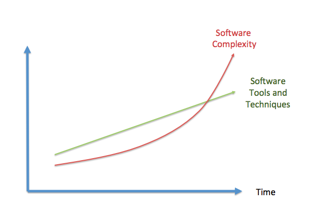
The Software Complexity Evolution
In other words, the software creation process has evolved very little
while the problems software is solving are way too much complex
"We have repeatedly reported on cost rising by millions of dollars,
schedule delays, of not months but years, and multi-billion-dollar
systems that don't perform as envisioned. The understanding of
software as a product and of software development as a process is not
keeping pace with the growing complexity and software dependence of
existing and emerging mission-critical systems."
Government Accounting Office
Additionally, as depicted in
, the need of
software developers
has increased exponentially, because more software is needed as software
is used in nearly every product with a minimum of complexity. Whereas
the need of developers has increased exponentially, the availability of
developers has unfortunately not growed at the same pace, i.e. there are
less developers than what is needed. Due to that, people without the right
skills have started developing software, with the believe that developing
software is an easy task that nearly everybody could do. Developing
software with people not properly trained or without the right skills
inherently leads to bad quality software.
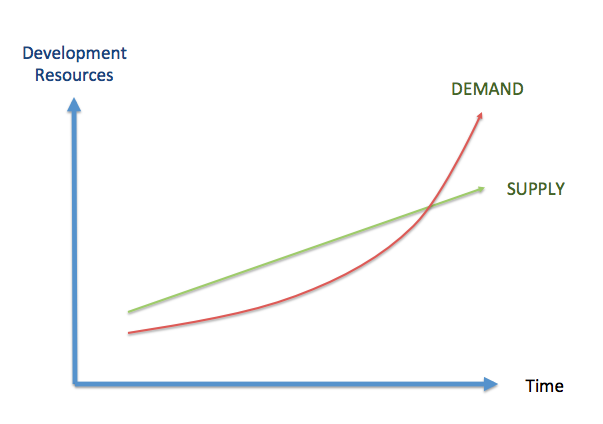
The Software Resources Evolution
Legal Warranties
Mortenson, a construction contractor purchased software from Timberline
Software Corporation, which Timberline installed in Mortenson’s computers.
Mortenson, relying on the software, placed a bid which was $1.95 million
too low because a bug in the software of which Timberline was aware. The
State of Washington Supreme Court ruled in favor of Timberline Software.
However, a simple bug in the software lead to multiple problems to both
companies. In the US Warranty Laws, the Article 2 of the Uniform
Commercial Code includes the “Uniform Computer Information Transaction
Act” (UCITA) that allows software manufacturers to:
Disclaim all liability for defects
Prevent the transfer of software from person to person remotely
Disable licensed software during a dispute
That act, practically means that software distributors can limit their
liability through appropriate clauses in the contracts. For instance,
below is shown the disclaimer of warranties of a Microsoft
product. Although the law overprotects software developers and
distributors, using these disclaimers may prevent legal problems, but
there are multiple additional problems related with poor software that
are not avoided by them.
DISCLAIMER OF WARRANTIES. TO THE MAXIMUM EXTENT PERMITTED BY APPLICABLE
LAW, MICROSOFT AND ITS SUPPLIERS PROVIDE TO YOU THE SOFTWARE COMPONENT,
AND ANY (IF ANY) SUPPORT SERVICES RELATED TO THE SOFTWARE COMPONENT
("SUPPORT SERVICES") AS IS AND WITH ALL FAULTS; AND MICROSOFT AND ITS
SUPPLIERS HEREBY DISCLAIM WITH RESPECT TO THE SOFTWARE COMPONENT AND
SUPPORT SERVICES ALL WARRANTIES AND CONDITIONS, WHETHER EXPRESS,
IMPLIED OR STATUTORY, INCLUDING, BUT NOT LIMITED TO, ANY (IF ANY)
WARRANTIES OR CONDITIONS OF OR RELATED TO: TITLE, NON- INFRINGEMENT,
MERCHANTABILITY, FITNESS FOR A PARTICULAR PURPOSE, LACK OF VIRUSES,
ACCURACY OR COMPLETENESS OF RESPONSES, RESULTS, LACK OF NEGLIGENCE OR
LACK OF WORKMANLIKE EFFORT, QUIET ENJOYMENT, QUIET POSSESSION, AND
CORRESPONDENCE TO DESCRIPTION. THE ENTIRE RISK ARISING OUT OF USE OR
PERFORMANCE OF THE SOFTWARE COMPONENT AND ANY SUPPORT SERVICES REMAINS
WITH YOU.
Although the law overprotects software developers and distributors,
using these disclaimers may prevent legal problems, but it is just a
way to avoid the legal problems of having bad quality software not solving
the real problem that is what affect and frustrates end users..
What is Software Quality?
Many people have tried to define what does Software Quality mean.
However, it is not an easy task. Quality in general (not only in
Software) is such a subjective topic that trying to define it
formally is extremelly challenging.
There is a very interesting book called "Zen and the Art of
Motorcycle Maintenance" link in which the narrator talks about
the proces of creative writing, and specially about quality. The
quality of a written text is difficult to define. If you ask people
to rank essays (or programs) from best to worst it is very likely
they reach a consensus – they have an intuitive understanding that
one essay has more quality than another – but it’s much more difficult
to identify the parts of the essay that give it quality.
In Zen and the Art of Motorcycle Maintenance, Pirsig (the author)
explores the meaning and concept of quality, a term he deems to be
undefinable. Pirsig's thesis is that to truly experience quality
one must both embrace and apply it as best fits the requirements
of the situation. According to Pirsig, such an approach would avoid
a great deal of frustration and dissatisfaction common to modern life.
Let's think about another example of how the situation determines
the quality. For instance, a master chef has prepared an exquisite
meal and invited a group of friends to share it at her restaurant
on a lovely summer evening. Unfortunately the air conditioning
isn’t working at the restaurant, the waiters are surly, and two of
the friends have had a nasty argument on the way to the restaurant
that dominates the dinner conversation. The meal itself is of the
highest quality but the experiences of the diners are not.
You could think that writing code is very different to writing an
essay, but that is not the case. Usually, when you have a look at
a piece of code it is easy for you to determine if you like it or
not, but it becomes quite complicated to assess why.
View 1: Formal Definition
Software quality may be defined as conformance to explicitly stated
functional and performance requirements, explicitly documented
development standards and implicit characteristics that are expected
of all professionally developed software.
This definition emphasis from three points:
Software requirements are the foundations from which quality is measured:
Lack of conformance to requirement is lack of quality.
Specified standards define a set of development criteria that guide the
manager is software engineering: If criteria are not followed lack of
quality will almost result.
A set of implicit requirements often goes unmentioned, like for example ease
of use, maintainability, etc.: If software confirms to its explicit
requirement but fails to meet implicit requirements,software quality
is suspected.
For the first item, explicit software requirements, it is going to be
relatively easy to check objectively the conformance to them, for the
second one, it is going to be more complicated and depends on how
documented those standards are, for the implicit characteristics
expected, it is going to be even tougher, as measuring conformace to
something that is implicit, is, by definition, impossible.
View 2: The Human Point of View
Those "implicit" requirements mentioned in the formal definition
are a hint to indicate that there is something more about Software
that goes beyond the explicit requirements. At the end of the day,
software is going to be used by people, which do not care about
the requirements but about their expectations. Hence, the need
to look for another point of view.
“A product's quality is a function of how much it changes the world
for the better." [[MANAGEMENT-VS-QUALITY]] or “Quality is value to
some person" [[QUALITY-SOFTWARE-MANAGEMENT]]. Both definitions
stress that the quality may be subjective. I.e. different people
are going to perceive different quality in the same software.
The software developers should also think about end users and asking
themselves questions such as “How are users going to use the
software?”.
In order to provide a more complete picture, IEEE standard
610.12-1990 combines both views in their definitions of quality:
Software quality is
The degree to which a system, component, or process meets
specified requirements.
The degree to which a system, component or process meets
customer or user needs or expectations.
View 3: Internal vs. External Quality
There is another dimension of Software Quality that depends on
whether we focused on the part of the Software that is exposed
to the users or on the part of the Software that is not.
External Quality is the fitness for purpose of the software, i.e.
does the software what it is supposed to do?. The typical way to
measure external quality is through functional tests and bugs
measurement.
Usually this is related to the conformance requirements that affect
end-users (formal definition) as well as to meeting the end-user
expectations (human point of view).
Some of the properties that determine the external quality of
software are:
Conformance to the product specifications and user expectations.
Reliability: Is the software working with the same level
performance under different conditions and during all the time.
Accuracy: Does the software do exactly what is supposed to do.
Ease of use and comfort: Is the software easy to use and responds
in an amount time according to user expectations?
Robustness: Does the software adapt to unforeseen situations,
e.g. invalid input parameters, connectivity lost...
Internal Quality is everything the software does but is never seen
directly by the end-user. It's the implementation, which the
customer never directly sees. Internal quality can be measured by
conformance requirements (not focused on end-users but on software
structure), software analysis and adherence to development standards
or best practices.
If it is not visible to end-user, and our target is make customers
happy, we could ask ourselves if Internal Quality is something we
should pay attention to.
Internal quality is related with the design of the software and it
is purely in the interest of development. If Internal quality starts
falling, the system will be less amenable to change in the future.
Due to that, code reviews, refactoring and testing are essential as
otherwise the internal quality will slip.
An interesting analogy with debts and bad code design was developed
Ward [[DEBT-ANALOGY]]. Sometimes companies need to get some credit
from the banks in order to be able to invest, however, it is also
critical to understand that is impossible to ask for credit
continuously as the paying interest will kill the company
financially. The same could be used for software, sometimes it is
good to assume some technical debt to achieve a goal, for instance,
meeting a critical milestone to reach users before our competitors,
but it is important to understand that assuming technical debt
endlessly would kill the project as it will make the product
unmaintainable.
Sometimes, after achieving the target External Quality, we need to
refactor our code to improve the Internal Quality. Software Quality
is sometimes the art of a continuous refactor.
Let's go back to the analogy of writing an essay or a paper, in that
case most people write out the first draft as a long brain-dump
saying everything that should be said. After that, the draft is
constantly changed (refactored) until it is a cohesive piece of
work.
When developing software (for instance in Univeristy assignments
:-D) the first draft is often finished when it meets the general
requirements of the task. So, after that, there is an immediate
need to refactor the work into a better state without breaking the
external quality. Maybe writing software is also kind of an art?
This is universally true, and the danger of not paying attention
to refactor your code is bigger on a larger project where poor
quality code can lose you days in debugging and refactoring.
Some of the properties that enable the process of product with good
internal quality are:
Concision: The code does not suffer from duplication.
Cohesion: Each [module|class|routine] serves a particular purpose
(e.g. it does one thing) and does it well.
Low coupling: Minimal inter-dependencies and interrelation between
objects and modules.
Simplicity: The software is always designed in the simplest possible
manner so that errors are less likely to be introduced.
Generality: Specific solutions are only used if they are really needed.
Clarity: the code enjoys a good autodocumentation level so that it is
easy to be maintained.
The external quality is sometimes compared with “Doing the right
things” as opposed to “Doing the things right” which should define
what internal quality is.
Usually, the problems with the external quality characteristics
(correctness, reliability...) are simply visible symptons about
software problems, that usually are related with internal quality
attributes: program structure, complexity, coupling, testability,
reusability, readability, maintainability... Sometimes, when
the internal quality is bad, external quality can be met during a
short period of time, but in the longer term, the external quality
will be affected.
An excellent analogy is the Quality Iceberg created by Steve
McConell (see ).
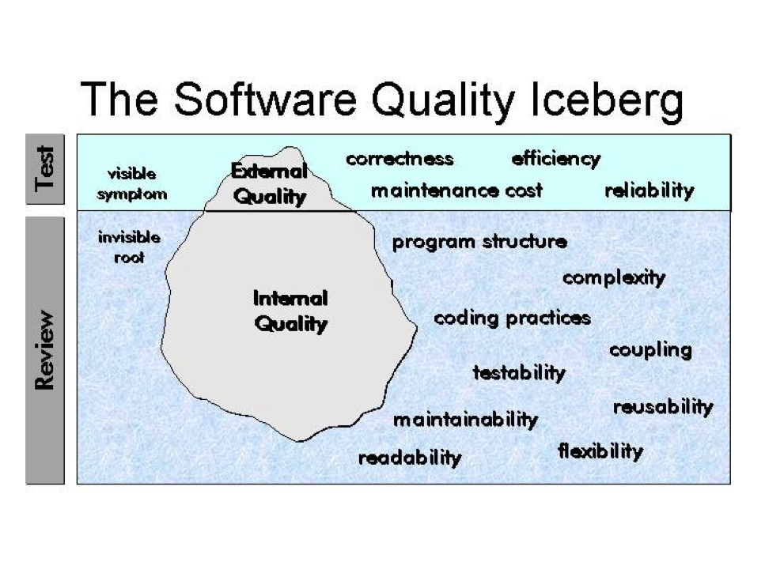
The Software Quality Iceberg
View 4: ISO 9126
ISO 9126 defines Software Quality as the totality of characteristics
of an entity that bears on its ability to satisfy stated and implied
needs.
It recognizes that quality is not only determined by the software
itself but also by the process used for software development and the
use made of the software. Hence, the following identities are defined:
Quality of the process of constructing software – process quality
Quality of software product in itself – internal and external quality
Quality of software product in use – quality in use
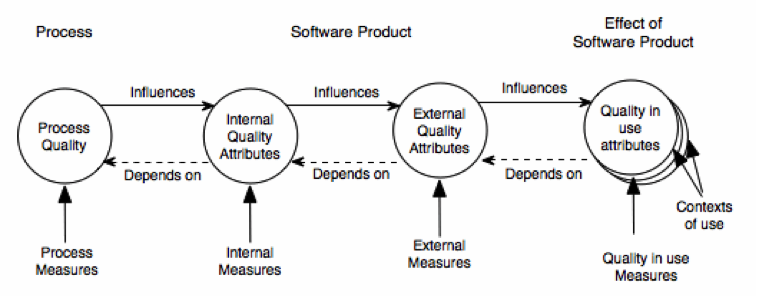
ISO 9126 View on Software Quality
ISO identified 6 characteristics of the software quality that are
sub-divided into sub-characteristics:
Functionality: A set of attributes that bear on the existence of a
set of functions and their specified properties. The following
sub-characteristics were defined: Suitability, Accuracy,
Interoperability and Security.
Reliability: A set of attributes that bear on the capability of software
to maintain its level of performance under stated conditions for a stated
period of time. The following sub-characteristics were defined. The
following sub-characteristics were defined: Maturity, Fault Tolerance and
Recoverability.
Usability: A set of attributes that bear on the effort needed for use.
The following sub-characteristics were defined: Understandability,
Learnability and Operability.
Efficiency: A set of attributes that bear on the relationship between
the level of performance of the software and the amount of resources
used. The following sub-characteristics were defined: Time Behaviour
and Resource Behaviour.
Maintenability: A set of attributes that bear on the effort needed to
make specified modifications. The following sub-characteristics were
defined: Analyzability, Changeability, Stability and Testability.
Portability: A set of attributes that bear on the ability of software
to be transferred from one environment to another. The following
sub-characteristics were defined: Adaptability, Installability,
Conformance and Replaceability.
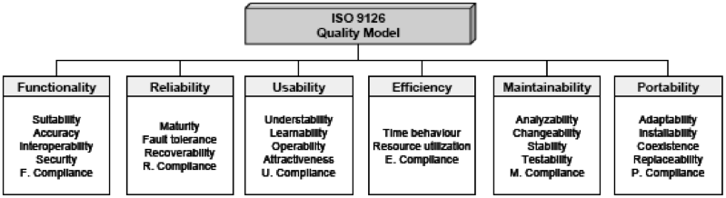
ISO 9126 Quality Characteristics
Quality in use is defined by ISO as “the extent to which a product used
by specified users meets their needs to achieve specified goals with
effectiveness, productivity, and satisfaction in specified contexts of use”.
The quality in use hence depends on the context in which the product is
used and its intrinsic quality.
Summary
There is no a single definition of quality. However, the importance of
Software Quality is continuously increasing. The concepts of external and
internal quality are commonly used across the software industry. However,
the properties used to measure the quality diverge across different
methodologies, standards or companies.
Key Definitions
Despite the availability of different quality definitions,
characteristics and entities, a common understanding is that high quality
is usually linked to products with low number of defects. Therefore, it
is assumed that a quality problem is due to the impact of a defect.
But in order to identify which is high quality, defining what a defect is
needed. In general, there are three concepts used in software quality to
refer to defects:
Failure: Any deviation of the observed behavior from the specified
behavior.
Error: System state where any further processing by the system will
lead to a failure.
Fault: Algorithmic cause of an error. (Also known as bug or defect).
A real life example of all these concepts is described in Example 2.
Peter is driving his car towards Oxford. While he is driving, the road
diverts into two different directions:
1. Left road to Oxford
2. Right road to Cambridge
By mistake, Peter takes the road to Cambridge. That is a fault that is
committed by Peter.
Suddenly, Peter is in an error situation or state: Peter is heading
Cambridge and not Oxford.
If Peter goes on and arrives to Cambridge, that would be a failure:
Peter was planning to get to Oxford but he has arrived to Cambridge instead.
If Peter realizes of the error situation while he is driving Cambridge,
returns to the junction and takes the right road to Oxford no failure
would happen as Peter recovers from the error condition.
public static int numZero (int[] x) {
// effects: if x == null throw NullPointerException
// else return the number of occurrences of 0 in x
int count = 0;
for (int i = 1; i < x.length; i ++) {
if (x[i] == 0) {
count ++;
}
}
return count;
}
The fault in the code above is that it starts looking for zeroes at index 1
instead of index 0. For example, numZero([2, 7, 0]) correctly evaluates to
1, while numZero([0, 7, 2]) incorrectly evaluates to 0. In both cases the
fault is present and is executed. Although the code is in both cases in an
error situation, only in the second case there is a failure: the result is
different from the expected one. In the first case, the error condition
(the for starts in 1) do not propagates to the output.
Some early conclusions can be already identified:
For a given fault, not all the inputs to the software will “trigger” the
fault to create a failure. In some situations, the failure will not
appear to the end-user, despite the fault is in the code.
Identifying a fault given an observed failure is, in some situations,
very difficult, as multiple entities within the code (objects, methods,
attributes) may be involved and the fault may occur in any of them.
Software Quality Assurance
Introduction to SQA
Software Quality Assurance (SQA) is the set of methods used to improve
internal and external qualities. SQA aims at preventing, identifying and
removing defects throughout the development cycle as early as possible,
as such reducing test and maintenance costs.
SQA consists of a systematic, planned set of actions necessary to
provide adequate confidence that the software development process or the
maintenance process of a software system product conforms to established
functional technical requirements as well as with the managerial
requirements of keeping the schedule and operating within the budgetary
confines.
The ultimate target of the SQA activities is that few, if any, defects
remain in the software system when it is delivered to its customers or
released to the market. As it is virtually impossible to remove all
defects, another aim of QA is to minimize the disruptions and damages
caused by these remaining defects.
The SQA methodology will also depend on the software development
methodology used, as they are inherently couple. For instance,
different software development models will focus the test effort at
different points in the development process. Newer development models,
such as Agile, often employ test driven development and place an
increased portion of the testing in the hands of the developer, before
it reaches a formal team of testers. In a more traditional model, most
of the test execution occurs after the requirements have been defined
and the coding process has been completed.
An example of an SQA methodology is available at [[IEEE-QA-TEMPLATE]].
SQA activities are not only carried out by the Software Quality group,
the software engineer group is responsible for putting in place the SQA
methodology defined, which may include different activities such as
testing, inspection, reviews...
SQA Activities
Classification SQA Activities
The activities that are carried out as part of the SQA process can
be divided in three different categories.
Defect Prevention: Defect prevention consists on preventing certain
types of faults from being injected into the software. As explained
in section 1.1.3, a fault is the missing or incorrect human actions
that lead to error situations in the software. There are two
generic ways to prevent defects:
Eliminating certain fault sources such as ambiguities or human
misconceptions
Fault prevention or blocking: Breaking the causal relation between
error sources and faults through the use of certain tools and
technologies.
Defect reduction: Consists in removing the faults from the software
through fault detection and removal. These QA alternatives detect
and remove certain faults once they have been injected into the
software systems. The most traditional QA activities fall into this
category such as:
Inspection: directly detects and removes faults from the software
code, design, etc.
Testing: removes faults based on related failure observations
during program execution.
Defect containment: Consists in minimizing the impact of the
software faults. The most important techniques in this area are:
Fault-tolerance techniques: Try to break the causal relationship
between faults and failures. E.g. ensuring that error conditions
do not lead to a software failure.
Containment measures: Once the error has occurred, if there is
no way to prevent the failure, ideally, it should be possible
to perform some actions to minimize the impact and consequences
of the failure.
The following sections explain in detail these SQA activities.
Fault Prevention
The main goal of these activities is reducing the chance for defect
injections and the subsequent cost to deal with these injected
defects.
Most of the defect prevention activities assume that there are known
error sources or missing/incorrect actions that result in fault
injections, as follows:
If human misconceptions: Lack of education.
If imprecise designs & implementations: Lack of formal methods.
If non-conformace to standards: No standard enforcement.
If lack of tools and techniques: No technique or tool adoption.
Education and Training
People is the most important factor that determines the quality and,
ultimately, the success or failure of most software projects. Hence,
it is important that people involved in the software planning,
design and development have the right capabilities for doing their
jobs. The education and training effort for error source elimination
should focus on the following areas:
Product and domain specific knowledge.
Sofware development knowledge and expertise.
Knowledge about Development methodology, technology, and tools.
Development process knowledge.
Formal Methods
Formal methods provide a way to eliminate certain error sources and
to verify the absence of related faults. Formal development methods,
or formal methods in short, include formal specification and formal
verification.
Formal specification is concerned with producing an unambiguous
set of product specifications. An unclear specification implies
that the software target and behaviour may depend on the
interpretation of the developer, due to that the likelyhood of
defects in errors is higher.
Formal verification checks the conformance of software design or
code against these formal specifications, thus ensuring that the
software is fault-free with respect to its formal specifications.
Fault Removal
Even if the best software developers in the world are involved in
a software project, and even if they follow the formal methods
described in the previous section, some faults will be injected in
the software code. Due to that, defect prevention needs to be
complemented with other techniques focused on removing as many of
the injected faults as possible under project constraints.
Fault distribution is highly uneven for most software products,
regardless of their size. Much empirical evidence has accumulated
over the years to support the so-called 80:20 rule, which states
that 20% of the software components are responsible for 80% of the
problems (Pareto Law). There is a great need for risk identification
techniques to detect the areas in which the fault removal activities
should be focused.
There are two key activities that deal with fault removal: Code
Inspection and Testing.
Inspections
The software inspections were first introduced by Michael E. Fagan
in 1970s, when he was a software development manager at IBM. The
inspections are a means of verifying intellectual products by
manually examining the developing product, a piece at a time, by
small groups of peers to ensure that it is correct and conforms to
product specifications and requirements. Inspections may be done in
the software code itself and also in other related items such as
design or requirements documents.
Code inspections should check for technical accuracy and
completeness of the code, verify that it implements the planned
design, and ensure good coding practices and standards are used.
Code inspections should be done after the code has been compiled
and all syntax errors removed, but before it has been unit tested.
There are different kind of inspections depending on factors such
as the formality (formal vs informal) the size of the team (peer
review, team review), whether it is guided or not… The type of
inspection to be done depends on the software to be reviewed, the
team involved and the target of the review.
Regardless of the inspection type used, there are clear benefits
when inspections are used. For instance, according th Bell-Northen
Researh, the cost of detecting a defect is much lower in case of
inspections (1 hour per defect) than in the case of testing (2-4
hours per defect).
More information about inspections can be found at
[[INSPECTIONS-AND-REVIEWS]] and [[TRUTHS-PEER-REVIEWS]].
Testing
Testing is the execution of software and the observation of the
program behaviour and outcome. As in the case of the software
inspections, there are different kind of testing, usually applied
in different phases of the software development process.
Some of the most typical testing types are:
Unit Testing: individual units of source code are tested to
determine if they are fit for use. A unit is the smallest
testable part of an application.
Module Testing: A complete module is tested to determine if
it fulfils its requirements.
Integration Testing: Any type of software testing that seeks
to verify the interfaces between modules against a software
design.
System Testing: It tests a completely integrated system to
verify that it meets its requirements
Acceptance Testing: Testing performed often in production or
pre-production environment to check that the software is ready
for being delivered and deployed.
A concept tight related with testing (although applicable in other
areas such as reviews) is the handling of the defects. In
particular it is very important that the defects detected are
properly recorded (defect logging) with all the relevant information
as in many situations finding the error related with a fault is not
trivial. It is also very important that the issues detected are
monitored so that everybody knows what is the status of every defect
after the initial discovery (defect tracking).
Defect Containment
The defect reduction activities can only reduce the number of faults
to a fairly low level, but not completely eliminate them. For
instance, in many situations, the combination of possible situations
is so big, that it is impossible to test all those situations,
especially those linked to rare conditions or unsual dynamic scenarios.
Depending on the purpose of the software, these remaining faults, and
the failure risk due to them may be still inadequate, so some
additional QA techniques are needed:
Software fault tolerance.
Failure containment.
For instance, the software used in the flight control systems is one
example of software with very extreme requirements about failures.
The report [] provides more details about the challenges that this
kind of systems pose to software developers.
Software Fault Tolerance
Software fault tolerance ideas originate from fault tolerance designs
in traditional hardware systems that require higher levels of
reliability, availability, or dependability.
I
All fault tolerance systems must be based on the provision of useful
redundancy that allows to switch between components when one of they
fail (due to software or hardware faults). That impliest that there
has to be some extra components, which ideally should have a
different design to avoid the same error to happen twice. Based on
how those redundant componentes structured are used (e.g. when to
switch from one to another) there are different kind of systems:
Recovery blocks: Use repeated executions (or redundancy over time)
as the basic mechanism for fault tolerance. The software includes
a set of “recovery points” in which the status is recorded so that
they could be used as fallbacks in case something goes wrong. When
a piece of code is executed, a “test acceptance” is internally
executed, if the result is OK, a new “recovery point” is set-up,
if the result is not acceptable, then the software returns to the
previous “recovery point” and an alternative to the faulty code is
enacted. This process continues until the “acceptance test” is
passed or no more alternatives are available, which leads to a
failure. Some key characteristics about this scheme that is
depicted in :
It is a backward error recovery technique: when an error occurs,
appropriate actions are taken to react but no preventing action
is taken.
It is a “serial technique” in which the same functionality (the
recovery block) is never executed in parallel.
The “acceptance test” algorithm is the critical part to success
as well as the avaialability of recovery blocks designed in
different ways to the original code.
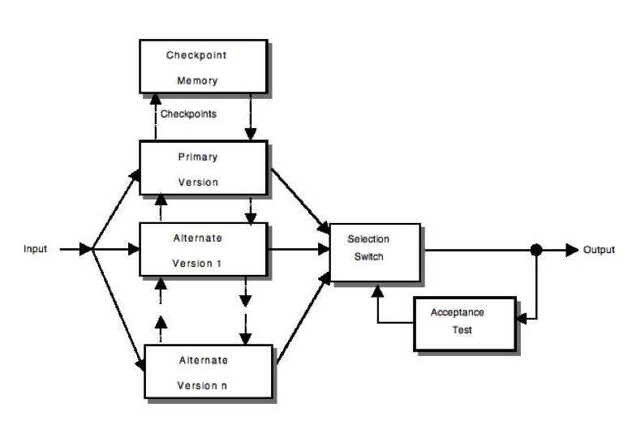
Recovery Blocks
NVP (N-version programming):
This technique uses parallel redundancy, where N copies, each of
a different version, of codes fulfilling the same functionality
are running in parallel with the same inputs. When all of those
N-copies have completed the operation, an adjudication process
(decision unit) takes place to determine (based in a more or
less complex vote) the output.
Some key characteristics about this scheme that is depicted in
It is a forward error recovery technique: preventive actions
are taken. Even if no error occurs the same functionality is
executed multiple times.
It is a “parallel technique” in which the same functionality
is always executed in parallel by different versions of the same
functionality.
The “decision unit” algorithm is the critical part to success as
well as the avaialability of different versions of the same code
designed in different ways.
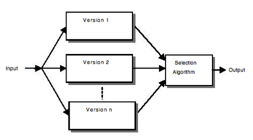
N version programming
Obviously a wide range of different variants of those sytems have
been proposed based in multiple combinations of them
[[COST-EFFECTIVE-FAULT-TOLERANCE]] and multiple comparisons between
the performance are also available [[PERFORMANCE-RB-NVP-SCOP]].
What do you think are the key advantages and disadvantages of the
two fault tolerance techniques described (Recovery Blocks &
N-Version)? Exercise 3 – Recovery Blocks vs. N-Version
Failure Containment
There is software that is used in safey critical systems, that
have severe consequences in case a failure occurs. In those
situations it is very important to avoid some of the potential
accidents or at lt
Various specific techniques are used for this kind of systems,
most of them based on the analysis of the potential hazards linked
to the failures:
Hazard Elimination through substitution, simplification,
decoupling, elimination of specific human errors and reduction
of hazardous materials or conditions. These techniques reduce
certain defect injections or substitue non-hazardous ones for
hazardous ones. The general approach is ismialr to the defect
prevention and defect reduction techniques surveyed earlier, but
with a focus on those problems involved in hazardous situations.
Hazard Reduction through design for controllability (for
example, automatic pressure release in boilers), us of locking
devices (for example, hardware/software interlocks), and failure
minimization using safety margins and redundancy. These
techniques are similar to fault tolerance, where local failures
are contained without leading to system failures.
Hazard control through reducing exposure, isolation and
containments (for example barriers between the system and the
environment), protection systems (active protection activated in
case of hazard), and fail-safe design (passive protection, fail
in a safe state without causing further damages). These techniques
reduce the severity of failures, therefore weakeining the link
between failures and accidentes.
Damage control through escape routes, safe abandonment of
products and materials, and devices for limiting physical damages
to equipment or people. These techniques reduce the severity of
accidents, thus limiting the damages cause by these accidentes
and related software failures.
Notice that both hazard control and damage control above are
post-failure activities that attempt to “contain” the failures so
that they will not lead to accidents or the accident damage can be
controlled or minimized. All these techniques are usually very
expensive and process/technology intensive, hence they should be
only applied when safety matters and deal with rare conditions
related to accidents.
Software Quality Engineering
Whereas Quality Assurance defines a set of methods to improve Software
Quality, it does not define aspects that are key in order to ensure
good quality software is delivered such as:
What is the Quality Target? I.e. when to stop and deliver the software
How can that quality target be checked.
Are the right QA tasks being done at the right time?
Are the QA tasks being executed right?
In order to address these questions, the QA activities should be
considered not in an isolated manner, but as part of a full engineering
problem. Software Quality Engineering is the discipline that defines
the processes to ensure high quality products. QA activities are only a
part of that process, which requires further activities such as Quality
Planning, Goal Setting or Quality Assessment. The
provides an overview of the typical SQE:
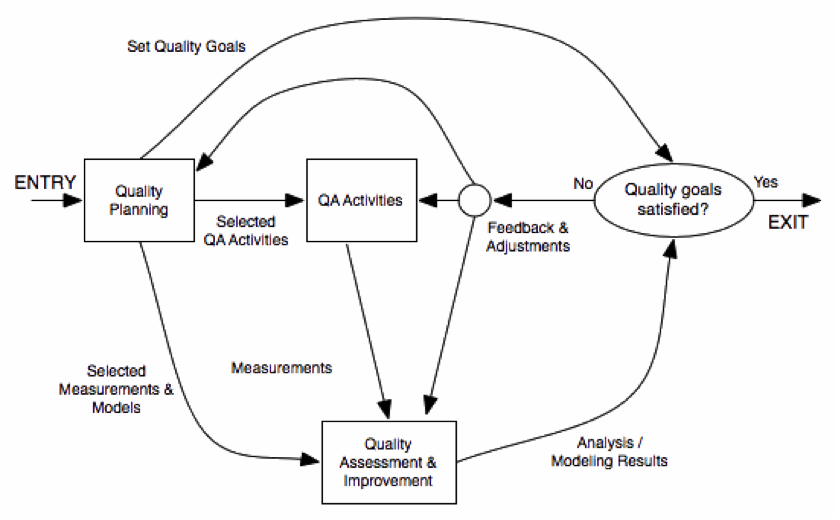
SQE Cycle
Pre-QA Activities: Quality Planning
Before doing any QA activity, it is important to consider some aspects
such as the target quality, the most appropriate QA activities to be
done and when should be done, how are the quality going to be
measured… All those activities are usually called Pre-QA or Quality
Planning Activities.
The first activity that should be done in SQE is defining what are the
specific quality goals for the software to be delivered. In order to
do so, it is important to understand what are the expectations of the
software end-user/customer. Obviously, it is also key to recognize
that the budget is limited and that the quality target should be
financially doable. The following activities are key to identify the
target quality of the software:
Identify quality views and attributes meaningful to target customers
and users. Which aspects will be key for them to perceive the
software as high quality one? This may depend a lot on the type of
product and on the target customers.
Select direct quality measures that can be used to measure those
quality attributes that are key for the customers.
Quantify these quality measures to set quality goals while
considering the market environment and the cost of achieving
different quality goals.
Once that the quality goals are clear, the QA strategy should be
defined. Two key decisions should be made during this stage:
Which QA activities are the most adequate ones to meet the customer
quality expectations. For doing this, it is important to translate
the quality views, attributes and goals into the QA activities to
be performed. It is also very important to determine when every
QA activity is going to be executed as part of the full Software
Development Process.
The external quality measures should be mapped into internal
indirect ones via selected quality models. Good models are
required in order to predict external quality based on internal
indicators. It is also very important to identify how the results
of this measure are going to be collected and used (e.g. what
happens if the quality is not good enough or how the feedback
is going to be used).
In-QA Activities
These activities have been described in section 1.4.2 and basically
consist in executing the QA activities planned and handling the defects
discovered as a result of them.
Post-QA Activities
These activities consist in measuring the quality of the software
(after the QA activities), assess the quality of the software product
and the definition of the decisions and actions need to improve its
quality.
All these activities are usually carried out after normal QA
activities have started but as part of these “normal” QA activities.
Their goal is to provide feedback so that decisions can be made and
improvements can be suggested. The key activities include:
Measurement: Besides the direct measure of tracking the defects
during the in-QA activities, various other measurements are needed
inorder to the track the QA activities and for project management
purposes. The data resulting from this analysis is important to
manage software project and quality.
Analysis and Modeling: These activities analyze measurement data
from software projects and fit them to analytical models that
provide quantitative assessment of selected quality characteristics
and sub-characteristics. This is key to obtain an objective
assessment of the current product quality, predict future quality
or identify problematic areas.
Providing feedback and identifying improvement potentials: The
results of the previous activities can lead to some suggestions to
improve the process followed with the software being assessed (e.g.
more testing resources are needed, test cases are not sufficient…)
or the general SQE methodology.
Follow-up Activities: Besides immediate actions, some actions
resulting from the analysis may require a longer time. For instance,
if major changes are suggested to change the SQE process, they
cannot be usually implemented while the current process has not
finished.
Quality Improvement Process (QIP)
The overall framework for quality improvement is called QIP, and it
includes three interconnected steps:
Understand the baseline so that improvement opportunities can be
identified and clear, measurable goals can be set.
Introduce process changes through experiments, pilot projects, assess
their impact, and fine tune these process changes.
Package baseline data, experiment results, local experience, and
updated process as the way to infuse the findings of the improvement
program into the development organization
describes graphically the flow of those
steps related to the SQE process.
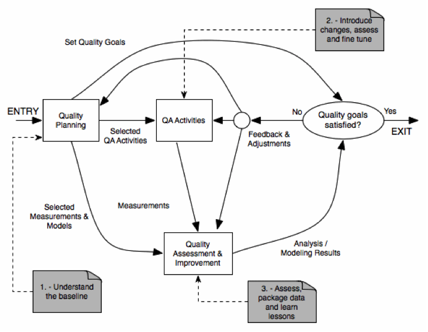
QIP Flow
The Deming Quality Cycle
W. Edwards Deming in the 1950's proposed that business processes
should be analyzed and measured to identify sources of variations
that cause products to deviate from customer requirements. He
recommended that business processes be placed in a continuous
feedback loop so that managers can identify and change the parts
of the process that need improvements. As a teacher, Deming created
a (rather oversimplified) diagram to illustrate this continuous
process, commonly known as the PDCA cycle for Plan, Do, Check, Act:
Plan Quadrant: one defines the objectives and determines the
conditions and methods required to achieve them.
Do Quadrant: the conditions are created and the necessary training
to execute the plan is performed (new procedures). The work is then
performed according to these procedures.
Check Quadrant: One must check to determine whether work is
progressing according to the plan and whether the expected results
are obtained.
Action Quadrant: If the checkup reveals that the work is not being
performed according to plan or results are not what was anticipated,
measures must be devised for appropriate action.
Deming's PDCA cycle can be illustrated as in
:
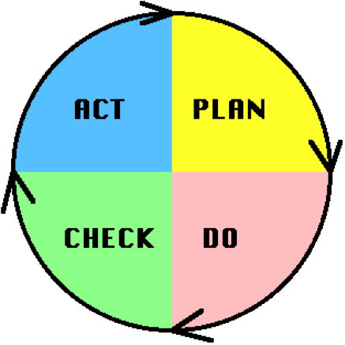
PDCA Circle
By going around the PDCA circle, the working methods are continously
improved as well as the results obtained. However, it is important to
take care avoid a situation called “spiral death”. It happens when an
organization goes around and around the quadrants, never actually
bringing a system into production.
QE in Software Development Process
The quality engineering process cannot be considered in an isolated
manner, but as parat for the overall software engineering process. For
instance, most of the SQE Activities should be included as part of the
Software Develpoment activities
():
Quality Planning should be part of product planning.
In-QA activities should be part of the development activities.
The Quality Analysis/Feedback should be part of the project
management responsibilities.
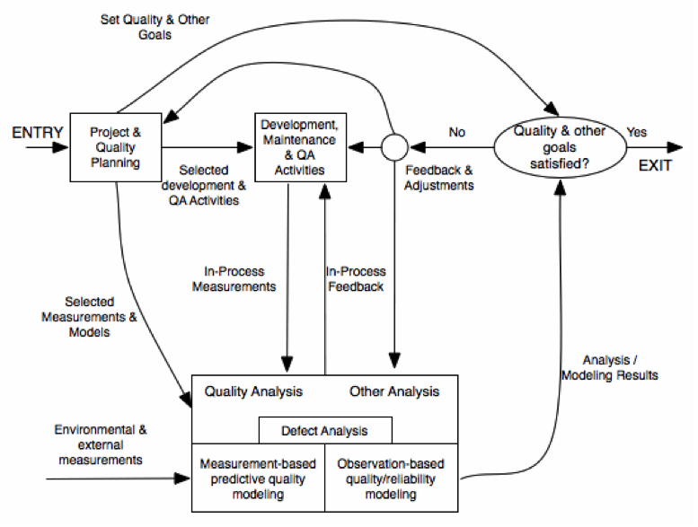
SQE and Software Development
However, it should be considered that SQE activities have different
timing requirements, activities and focus. For instance,
represents the typcial effort spent in the different quality activities
during the software development time.
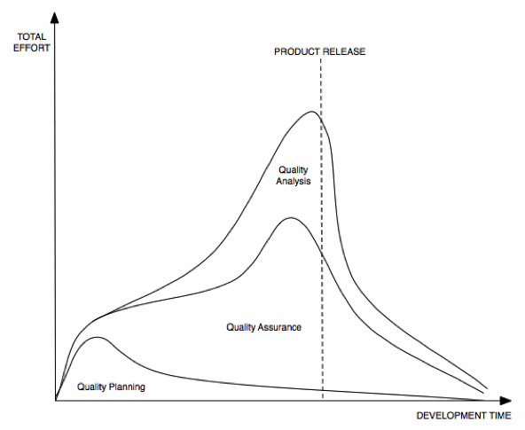
Focus of SQE Activities during the development process
Focusing on the QA activities, in a typical waterfall development model,
the provides an estimate of the key QA activities done during each of
the project phases:
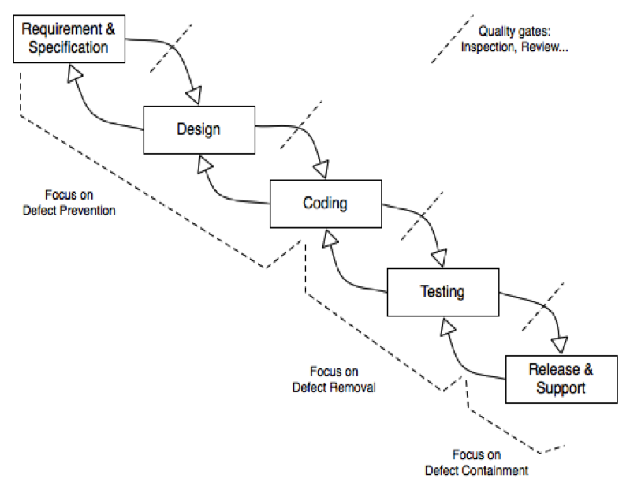
Focus of QA Activities during the development process
Another important aspect to be considered is that some of the QA
activities cannot be done until it is already too late. For example,
for safey critical systems, post-accident measurements provide a direct
measure of safety, but due to the damage linked to those accidents, they
should be avoided by all means. In order to take early measures,
appropriate models that link some of the quality measures during the
development process with the end product quality are needed. Last but
not least, it should be stressed that there is an increasing cost of
fixing problems late instead of doing early, because a hidden problem
may lead to other related problems, and the longer it stays in the
system, the discovery is more difficult.
The cost of quality
In section 1.1, some of the implications of bad quality software have
been introduced. The cost of poor quality (COPQ) is not the only cost
that Sofware Quality Engineering should take into account. The cost
of having good quality (COGQ) that may be linked to SQA activities
(e.g testing or code inspections) should not be understimated and
considered whent the total quality cost is assessed.
As in the case of the external and internal quality, the different
costs linked to quality have been represented by some authors as an
iceberg, in which some of the costs are easy to be identified (e.g.
testing costs, customer returns...) while some others are not always
taken account (e.g. unused capacity, excessive IT costs...). In
[[COST-OF-QUALITY]] there is a detailed analysis of this approach
for identifying quality costs.
Bad and Good Software Quality Cost
Acknowledgements
Many thanks to Robin Berjon for making our lives so much easier with his
cool tool.